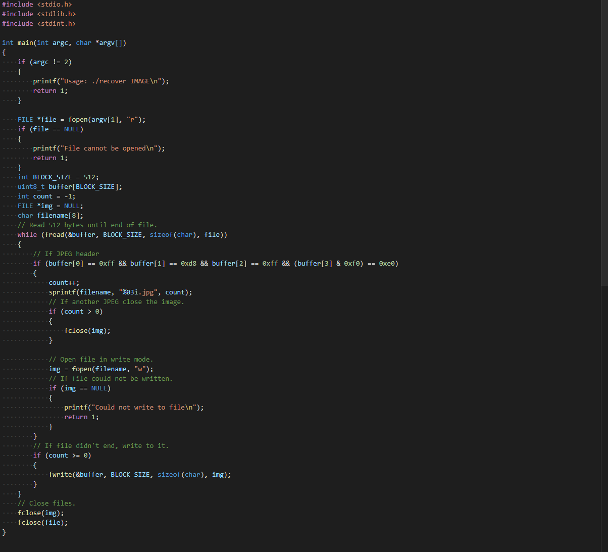

This is my documentation and download link for my C project: Recover.
Documentation
This project basically reads the first 44 bytes of a .raw file because that is the header for JPEG files, then when it finds a JPEG-looking file, it starts reading from the .raw file into a new JPEG file.

Download link
Here is the download link